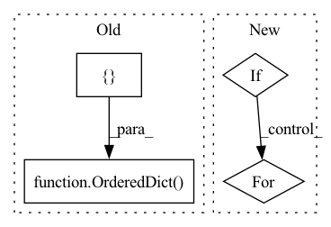

Pattern ID :9390
Before Change
// time = np.expand_dims(time, axis=1)
// data is stored in OrderedDict
inputs = OrderedDict({ "time": time} )
if n_lags > 0:
lags = np.array([series[i: i + n_lags] for i in range(n_samples)])
inputs["lags"] = lagsAfter Change
if verbose:
print("Tabularized inputs:")
for key, value in inputs.items():
if key == "seasonalities":
for mode, seasons_in in value.items():
for name, values in seasons_in.items():
print(mode, name, values.shape)
else:
print(key, "shape: ", value.shape)
return inputs, targetsIn pattern: SUPERPATTERN
Frequency: 3
Non-data size: 4
Instances Fragment ID: 33593474
Project Name: ourownstory/neural_prophet
Commit Name: b32dbb372666c54b5e9c0f57ff1cffc75c78998a
Time: 2020-05-26
Author: oskar.triebe@merantix.com
File Name: code/make_dataset.py
M Class Name: AnonimousClass
N Class Name: AnonimousClass
M Method Name: tabularize_univariate_datetime(6)
N Method Name: tabularize_univariate_datetime(6)
M Parent Class:
N Parent Class:
M File Name: code/make_dataset.py
N File Name: code/make_dataset.py
M Start Line: 80
M End Line: 109
N Start Line: 100
N End Line: 149
Before Change
@property
def inputs(self) -> Mapping[str, Mapping[int, str]]:
input_ids = [("input_ids", { 0: "batch_size", 1: "seq_len"} )]
// Shape of past states
// [past_key_values, batch_size, n_head, past_seq_len, d_head]
past_key_values = [(f"past_{i}", {1: "batch_size", 3: "past_seq_len"}) for i in range(self.config.n_layer)]
return OrderedDict( input_ids + past_key_values)
@property
def outputs(self) -> Mapping[str, Mapping[int, str]]:
probs = [("probs", {0: "batch_size"})]After Change
def inputs(self) -> Mapping[str, Mapping[int, str]]:
inputs = super().inputs
if self.use_past:
for i in range(self.num_layers):
// [past_key_values, batch_size, n_head, past_seq_len, d_head]
inputs[f"past_{i}"] = {1: "batch_size", 3: "past_seq_len"}
return inputs
Fragment ID: 33593468
Project Name: microsoft/archai
Commit Name: 8254a072f90116d5a1285a02111a26ada38271f4
Time: 2022-12-16
Author: gth.rosa@uol.com.br
File Name: archai/nlp/onnx/config_utils/onnx_config_base.py
M Class Name: OnnxConfigWithPast
N Class Name: OnnxConfigWithPast
M Method Name: inputs(1)
N Method Name: inputs(1)
M Parent Class: OnnxConfig
N Parent Class: OnnxConfig
M File Name: archai/nlp/onnx/config_utils/onnx_config_base.py
N File Name: archai/nlp/onnx/config_utils/onnx_config_base.py
M Start Line: 108
M End Line: 114
N Start Line: 102
N End Line: 109
Before Change
@property
def outputs(self) -> Mapping[str, Mapping[int, str]]:
probs = [("probs", { 0: "batch_size"} )]
// Shape of present states (past states when outputting)
// [past_key_values, batch_size, n_head, total_seq_len, d_head]
// Note that total_seq_len is seq_len + past_seq_len
present_key_values = [(f"present_{i}", {1: "batch_size", 3: "total_seq_len"}) for i in range(self.config.n_layer)]
return OrderedDict( probs + present_key_values) After Change
def outputs(self) -> Mapping[str, Mapping[int, str]]:
outputs = super().outputs
if self.use_past:
for i in range(self.num_layers):
// [past_key_values, batch_size, n_head, total_seq_len, d_head]
// Note that total_seq_len is seq_len + past_seq_len
outputs[f"present_{i}"] = {1: "batch_size", 3: "total_seq_len"}
return outputs
Fragment ID: 33593470
Project Name: microsoft/archai
Commit Name: 8254a072f90116d5a1285a02111a26ada38271f4
Time: 2022-12-16
Author: gth.rosa@uol.com.br
File Name: archai/nlp/onnx/config_utils/onnx_config_base.py
M Class Name: OnnxConfigWithPast
N Class Name: OnnxConfigWithPast
M Method Name: outputs(1)
N Method Name: outputs(1)
M Parent Class: OnnxConfig
N Parent Class: OnnxConfig
M File Name: archai/nlp/onnx/config_utils/onnx_config_base.py
N File Name: archai/nlp/onnx/config_utils/onnx_config_base.py
M Start Line: 118
M End Line: 125
N Start Line: 113
N End Line: 121